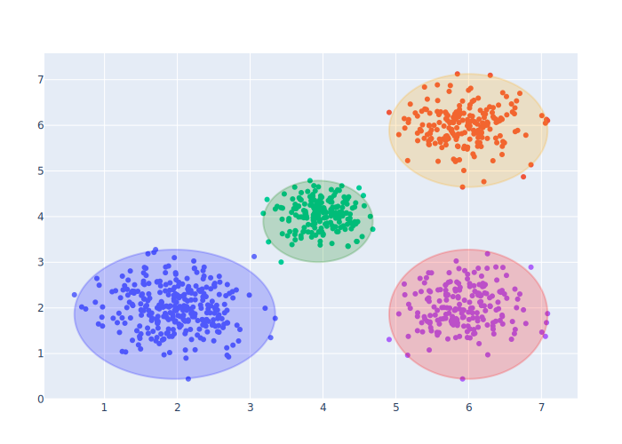

using PlotlyJS, Distributions
function house()
trace1 = scatter()
x0 = [2, 2, 5.5, 9, 9, 2, 5, 5, 6]
y0 = [1, 5.5, 9.5, 5.5, 1, 5.5, 1, 4, 4]
x1 = [2, 5.5, 9, 9, 2, 9, 5, 6, 6]
y1 = [5.5, 9.5, 5.5, 1, 1, 5.5, 4, 4, 1]
shapes = line(x0, x1, y0, y1; xref="x", yref="y")
plot([trace1],
Layout(;shapes=shapes, xaxis_range=(1, 10), yaxis_range=(0, 10)))
end
house()
function house2()
trace1 = scatter()
_p = string("M 2 1 L 2 5.5 L 5.5 9.6 L 9 5.5 L 9 1 L 2 1 ",
"M 2 5.5 L 9 5.5 ",
"M 5 1 L 5 4 L 6 4 L 6 1 Z")
plot([trace1],
Layout(;shapes=[path(_p)], xaxis_range=(1, 10), yaxis_range=(0, 10)))
end
house2()
function clusters()
x0 = rand(Normal(2, 0.45), 300)
y0 = rand(Normal(2, 0.45), 300)
x1 = rand(Normal(6, 0.4), 200)
y1 = rand(Normal(6, 0.4), 200)
x2 = rand(Normal(4, 0.3), 200)
y2 = rand(Normal(4, 0.3), 200)
data = [scatter(;x=x0, y=y0, mode="markers"),
scatter(;x=x1, y=y1, mode="markers"),
scatter(;x=x2, y=y2, mode="markers"),
scatter(;x=x1, y=y0, mode="markers")]
args = [(x0, y0, "blue"), (x1, y1, "orange"), (x2, y2, "green"),
(x1, y0, "red")]
shapes = [circle(x0=minimum(x), y0=minimum(y),
x1=maximum(x), y1=maximum(y);
opacity=0.2, fillcolor=c, line_color=c)
for (x, y, c) in args]
plot(data, Layout(;height=400, width=480, showlegend=false, shapes=shapes))
end
clusters()
function temperature()
x = ["2015-02-01", "2015-02-02", "2015-02-03", "2015-02-04", "2015-02-05",
"2015-02-06", "2015-02-07", "2015-02-08", "2015-02-09", "2015-02-10",
"2015-02-11", "2015-02-12", "2015-02-13", "2015-02-14", "2015-02-15",
"2015-02-16", "2015-02-17", "2015-02-18", "2015-02-19", "2015-02-20",
"2015-02-21", "2015-02-22", "2015-02-23", "2015-02-24", "2015-02-25",
"2015-02-26", "2015-02-27", "2015-02-28"]
y = rand(1:20, length(x))
data = scatter(;x=x, y=y, name="temperature", mode="line")
shapes = rect(["2015-02-04", "2015-02-20"], ["2015-02-06", "2015-02-22"],
0, 1; fillcolor="#d3d3d3", opacity=0.2, line_width=0,
xref="x", yref="paper")
plot(data, Layout(shapes=shapes, width=500, height=500))
end
temperature()
; fill-opacity: 1;"/><defs id="defs-d9e2f1"><g class="clips"><clipPath id="clipd9e2f1xyplot" class="plotclip"><rect width="600" height="390"/></clipPath><clipPath class="axesclip" id="clipd9e2f1x"><rect x="50" y="0" width="600" height="500"/></clipPath><clipPath class="axesclip" id="clipd9e2f1y"><rect x="0" y="60" width="700" height="390"/></clipPath><clipPath class="axesclip" id="clipd9e2f1xy"><rect x="50" y="60" width="600" height="390"/></clipPath></g><g class="gradients"/><g class="patterns"/></defs><g class="bglayer"><rect class="bg" x="50" y="60" width="600" height="390" style="fill: rgb(229, 236, 246); fill-opacity: 1; stroke-width: 0;"/></g><g class="layer-below"><g class="imagelayer"/><g class="shapelayer"/></g><g class="cartesianlayer"><g class="subplot xy"><g class="layer-subplot"><g class="shapelayer"/><g class="imagelayer"/></g><g class="gridlayer"><g class="x"><path class="xgrid crisp" transform="translate(205.56,0)" d="M0,60v390" style="stroke: rgb(255, 255, 255); stroke-opacity: 1; stroke-width: 1px;"/><path class="xgrid crisp" transform="translate(361.11,0)" d="M0,60v390" style="stroke: rgb(255, 255, 255); stroke-opacity: 1; stroke-width: 1px;"/><path class="xgrid crisp" transform="translate(516.6700000000001,0)" d="M0,60v390" style="stroke: rgb(255, 255, 255); stroke-opacity: 1; stroke-width: 1px;"/></g><g class="y"><path class="ygrid crisp" transform="translate(0,356.61)" d="M50,0h600" style="stroke: rgb(255, 255, 255); stroke-opacity: 1; stroke-width: 1px;"/><path class="ygrid crisp" transform="translate(0,264.24)" d="M50,0h600" style="stroke: rgb(255, 255, 255); stroke-opacity: 1; stroke-width: 1px;"/><path class="ygrid crisp" transform="translate(0,171.87)" d="M50,0h600" style="stroke: rgb(255, 255, 255); stroke-opacity: 1; stroke-width: 1px;"/><path class="ygrid crisp" transform="translate(0,79.5)" d="M50,0h600" style="stroke: rgb(255, 255, 255); stroke-opacity: 1; stroke-width: 1px;"/></g></g><g class="zerolinelayer"><path class="yzl zl crisp" transform="translate(0,448.97)" d="M50,0h600" style="stroke: rgb(255, 255, 255); stroke-opacity: 1; stroke-width: 2px;"/></g><path class="xlines-below"/><path class="ylines-below"/><g class="overlines-below"/><g class="xaxislayer-below"/><g class="yaxislayer-below"/><g class="overaxes-below"/><g class="plot" transform="translate(50,60)" clip-path="url(%23clipd9e2f1xyplot)"><g class="scatterlayer mlayer"><g class="trace scatter trace1754e7" style="stroke-miterlimit: 2; opacity: 1;"><g class="fills"/><g class="errorbars"/><g class="lines"><path class="js-line" d="M0,296.61L22.22,148.82L44.44,19.5L66.67,148.82L88.89,56.45L111.11,333.55L133.33,333.55L155.56,93.39L177.78,185.76L200,241.18L222.22,278.13L244.44,204.24L266.67,352.03L288.89,259.66L311.11,315.08L333.33,19.5L355.56,352.03L377.78,111.87L400,74.92L422.22,37.97L444.44,333.55L466.67,370.5L488.89,315.08L511.11,93.39L533.33,278.13L555.56,37.97L577.78,296.61L600,37.97" style="vector-effect: non-scaling-stroke; fill: none; stroke: rgb(99, 110, 250); stroke-opacity: 1; stroke-width: 2px; opacity: 1;"/></g><g class="points"/><g class="text"/></g></g></g><g class="overplot"/><path class="xlines-above crisp" d="M0,0" style="fill: none;"/><path class="ylines-above crisp" d="M0,0" style="fill: none;"/><g class="overlines-above"/><g class="xaxislayer-above"><g class="xtick"><text text-anchor="middle" x="0" y="463" transform="translate(50,0)" style="font-family: %27Open Sans%27, verdana, arial, sans-serif; font-size: 12px; fill: rgb(42, 63, 95); fill-opacity: 1; white-space: pre; opacity: 1;"><tspan class="line" dy="0em" x="0" y="463">Feb 1</tspan><tspan class="line" dy="1.3em" x="0" y="463">2015</tspan></text></g><g class="xtick"><text text-anchor="middle" x="0" y="463" style="font-family: %27Open Sans%27, verdana, arial, sans-serif; font-size: 12px; fill: rgb(42, 63, 95); fill-opacity: 1; white-space: pre; opacity: 1;" transform="translate(205.56,0)">Feb 8</text></g><g class="xtick"><text text-anchor="middle" x="0" y="463" style="font-family: %27Open Sans%27, verdana, arial, sans-serif; font-size: 12px; fill: rgb(42, 63, 95); fill-opacity: 1; white-space: pre; opacity: 1;" transform="translate(361.11,0)">Feb 15</text></g><g class="xtick"><text text-anchor="middle" x="0" y="463" style="font-family: %27Open Sans%27, verdana, arial, sans-serif; font-size: 12px; fill: rgb(42, 63, 95); fill-opacity: 1; white-space: pre; opacity: 1;" transform="translate(516.6700000000001,0)">Feb 22</text></g></g><g class="yaxislayer-above"><g class="ytick"><text text-anchor="end" x="49" y="4.199999999999999" transform="translate(0,448.97)" style="font-family: %27Open Sans%27, verdana, arial, sans-serif; font-size: 12px; fill: rgb(42, 63, 95); fill-opacity: 1; white-space: pre; opacity: 1;">0</text></g><g class="ytick"><text text-anchor="end" x="49" y="4.199999999999999" style="font-family: %27Open Sans%27, verdana, arial, sans-serif; font-size: 12px; fill: rgb(42, 63, 95); fill-opacity: 1; white-space: pre; opacity: 1;" transform="translate(0,356.61)">5</text></g><g class="ytick"><text text-anchor="end" x="49" y="4.199999999999999" style="font-family: %27Open Sans%27, verdana, arial, sans-serif; font-size: 12px; fill: rgb(42, 63, 95); fill-opacity: 1; white-space: pre; opacity: 1;" transform="translate(0,264.24)">10</text></g><g class="ytick"><text text-anchor="end" x="49" y="4.199999999999999" style="font-family: %27Open Sans%27, verdana, arial, sans-serif; font-size: 12px; fill: rgb(42, 63, 95); fill-opacity: 1; white-space: pre; opacity: 1;" transform="translate(0,171.87)">15</text></g><g class="ytick"><text text-anchor="end" x="49" y="4.199999999999999" style="font-family: %27Open Sans%27, verdana, arial, sans-serif; font-size: 12px; fill: rgb(42, 63, 95); fill-opacity: 1; white-space: pre; opacity: 1;" transform="translate(0,79.5)">20</text></g></g><g class="overaxes-above"/></g></g><g class="polarlayer"/><g class="ternarylayer"/><g class="geolayer"/><g class="funnelarealayer"/><g class="pielayer"/><g class="iciclelayer"/><g class="treemaplayer"/><g class="sunburstlayer"/><g class="glimages"/><defs id="topdefs-d9e2f1"><g class="clips"/></defs><g class="layer-above"><g class="imagelayer"/><g class="shapelayer"><path data-index="0" fill-rule="evenodd" d="M116.67,450H161.11V60H116.67Z" clip-path="url(%23clipd9e2f1x)" style="opacity: 0.2; stroke: rgb(0, 0, 0); stroke-opacity: 0; fill: rgb(211, 211, 211); fill-opacity: 1; stroke-width: 0px;"/><path data-index="1" fill-rule="evenodd" d="M472.22,450H516.6700000000001V60H472.22Z" clip-path="url(%23clipd9e2f1x)" style="opacity: 0.2; stroke: rgb(0, 0, 0); stroke-opacity: 0; fill: rgb(211, 211, 211); fill-opacity: 1; stroke-width: 0px;"/></g></g><g class="infolayer"><g class="g-gtitle"/><g class="g-xtitle"/><g class="g-ytitle"/></g></svg>)
function vlines1()
# one scalar argument produces one line. Need to wrap in an array because
# layout.shapes should be an array
trace1 = scatter(;x=1:10, y=(1:10).^2)
shapes = [vline(2)]
plot([trace1], Layout(;shapes=shapes))
end
vlines1()
function vlines2()
# one argument draws a vertical line up the entire plot
trace1 = scatter(;x=1:10, y=(1:10).^2)
shapes = vline([2, 6])
plot([trace1], Layout(;shapes=shapes))
end
vlines2()
function vlines3()
# yref paper makes the 2nd and 3rd arguments on a (0, 1) scale vertically
# so 0.5 is 1/2 through the plot regardless of the values on y-axis
trace1 = scatter(;x=1:10, y=(1:10).^2)
shapes = vline([2, 6], 0, 0.5; yref="paper")
plot([trace1], Layout(;shapes=shapes))
end
vlines3()
function vlines4()
# Whichever argument is a scalar is repeated
trace1 = scatter(;x=1:10, y=(1:10).^2)
shapes = vline([2, 6], 0, [0.5, 0.75]; yref="paper")
plot([trace1], Layout(;shapes=shapes))
end
vlines4()
function vlines5()
# we can also set arbitrary line attributes line color and dash
trace1 = scatter(;x=1:10, y=(1:10).^2)
shapes = vline([2, 6], 0, [0.5, 0.75]; yref="paper",
line_color="green", line_dash="dashdot")
plot([trace1], Layout(;shapes=shapes))
end
vlines5()
function hlines1()
# one scalar argument produces one line. Need to wrap in an array because
# layout.shapes should be an array
trace1 = scatter(;x=1:10, y=(1:10).^2)
shapes = [hline(2)]
plot([trace1], Layout(;shapes=shapes))
end
hlines1()
function hlines2()
# one argument draws a horizontal line across the entire plot
trace1 = scatter(;x=1:10, y=(1:10).^2)
shapes = hline([25, 81])
plot([trace1], Layout(;shapes=shapes))
end
hlines2()
function hlines3()
# xref paper makes the 2nd and 3rd arguments on a (0, 1) scale horizontally
# so 0.5 is 1/2 through the plot regardless of the values on x-axis
trace1 = scatter(;x=1:10, y=(1:10).^2)
shapes = hline([25, 81], 0, 0.5; xref="paper")
plot([trace1], Layout(;shapes=shapes))
end
hlines3()
function hlines4()
# Whichever argument is a scalar is repeated
trace1 = scatter(;x=1:10, y=(1:10).^2)
shapes = hline([25, 81], 0, [0.5, 0.75]; xref="paper")
plot([trace1], Layout(;shapes=shapes))
end
hlines4()
function hlines5()
# we can also set arbitrary line attributes line color and dash
trace1 = scatter(;x=1:10, y=(1:10).^2)
shapes = hline([25, 81], 0, [0.5, 0.75]; xref="paper",
line_color="green", line_dash="dashdot")
plot([trace1], Layout(;shapes=shapes))
end
hlines5()